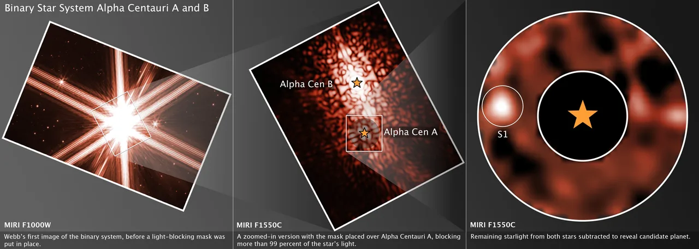

August 7, 2025
Possible gas giant in the habitable zone of Alpha Centauri A
Using the coronagraph of its MIRI instrument, the James Webb Space Telescope has found the strongest evidence so far for an exoplanet around Alpha Centauri A. This is the Sun-like primary star of the Alpha Centauri system, only 4.4 light-years away. The candidate could be a gas giant with roughly the mass of Saturn that orbits its star at one to two times the distance between Earth and the Sun. That would place it within the star's habitable zone. Life as we know it, however, would not be possible on such a gas giant. The planet has not been confirmed yet.
Source: ESA/Webb: "Webb finds new evidence for planet around closest solar twin." Online; esawebb.org; 2025-08-07